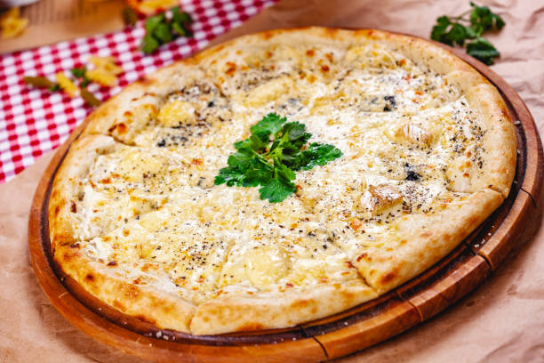

Four Cheese Pizza

Description
The four cheese pizza is a pizza type which particularity is the combination of four types of cheese melted together. It's a classic from pizzeria's meals.
Ingredients
- Pizza dough
- Tomato sauce
- Mozzarella
- Roquefort
- Goat Cheese
- Camembert
- Olives
Steps
- Put the pizza dough on a plain surface
- Add the tomato sauce first and the mozzarella right after
- Add the three other types of cheese on the pizza
- Add Salt and Pepper
- Preheat your oven to 220 degrees
- Put the pizza into the oven for 15 minutes
- You have to watch if the middle is well heated, if not put it again into the oven for 5 minutes
- You can serve and eat